奢华拼盘，尽享三种新鲜鱼类。[白]甲州葡萄酒搭配更佳！

将肥美秋刀鱼的鱼皮炙烤至香气四溢。搭配佐料，清爽享用！[白]甲州葡萄酒搭配更佳！
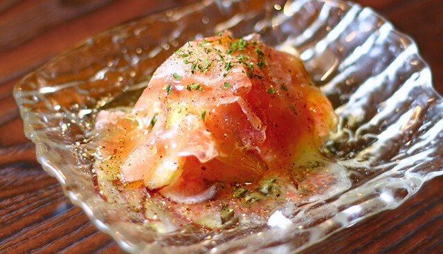
冰爽甘甜的冷冻无花果与马苏里拉芝士，搭配生火腿。推荐与起泡酒一起享用！

选用肥美的秋刀鱼，用紫苏叶包裹后炸制，搭配清爽的梅肉。请直接品尝！与[白]甲州葡萄酒非常搭配！
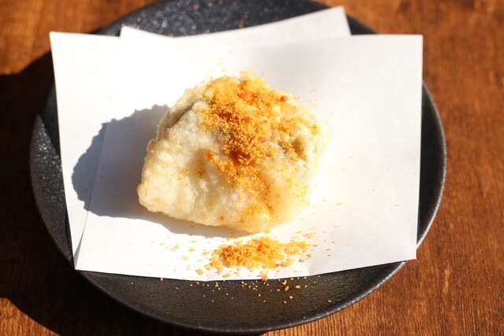
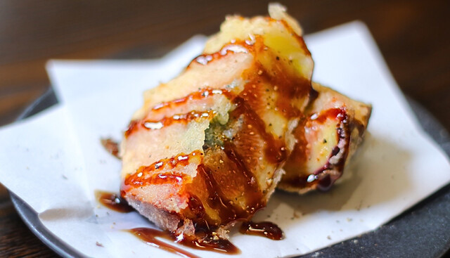
炸过的无花果更添甜味，搭配融化的戈尔根朱勒奶酪，佐以香醋酱。请直接品尝！与[红]麝香贝利A葡萄酒非常搭配！
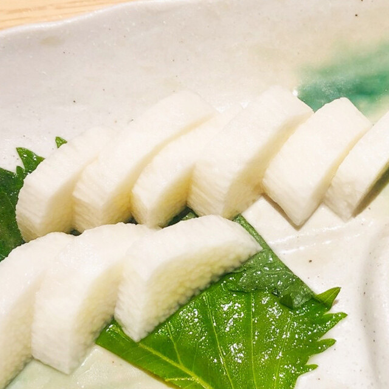
爽脆的山药配以芥末的独特香气，是天妇罗间隙的理想小菜！

自制土豆沙拉，口感细腻，带有温和的甜味。无论是佐餐还是小食都很合适！

鲷鱼的细腻甜味融合昆布的鲜美。请先品尝原味！[白]甲州葡萄酒搭配更佳！

多样前菜小碟拼盘，适合搭配您喜欢的酒品！

酒盗的浓郁鲜味与奶油奶酪的柔和口感完美融合。欢迎搭配您喜欢的酒品！

麝香葡萄的甜味、生火腿的咸香与芝士的浓郁完美融合。与起泡酒非常搭配！
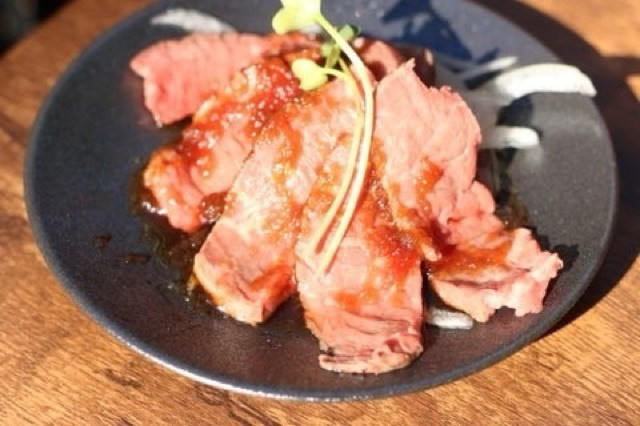
自信推荐的烤牛肉，尽享肉香与美味。与[红]黑皮诺葡萄酒非常搭配！
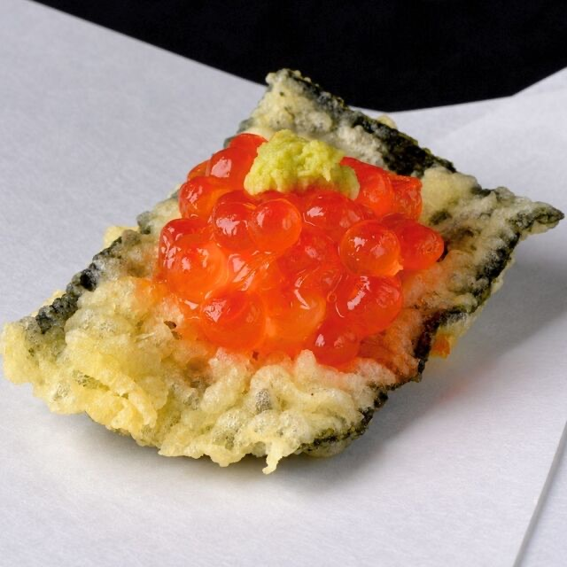
大塩的招牌！尽享鲑鱼籽的浓郁鲜味与海苔天妇罗的酥脆口感。与起泡酒相得益彰。
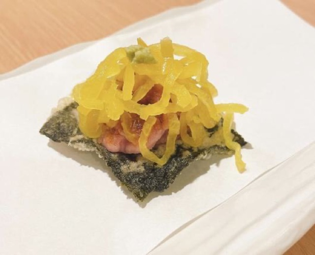
人气之选。葱金枪鱼泥与脆爽的腌萝卜完美结合。与起泡酒相得益彰。

经典之选！享受弹牙口感与现炸香气。可蘸藻盐品尝！与桃红起泡酒非常搭配。
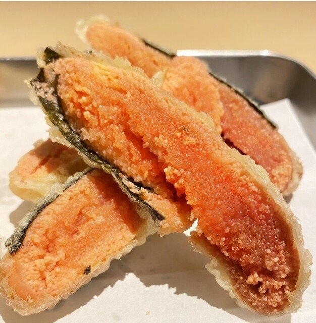
将明太子的浓郁鲜味包裹于酥脆外衣中。请直接品尝！与[白]雷司令葡萄酒非常搭配！
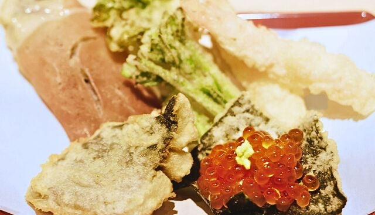
犹豫不决时首选！品尝当天推荐的五种天妇罗，享受多样美味。天妇罗推荐搭配起泡酒！
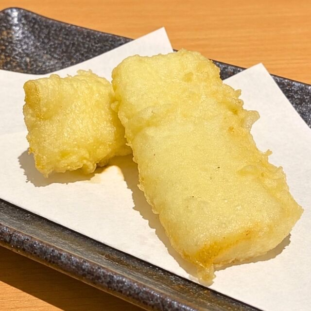
弹牙的口感与温和的甜味。无论蘸盐还是天妇罗酱都美味！与[白]维欧尼葡萄酒非常搭配！
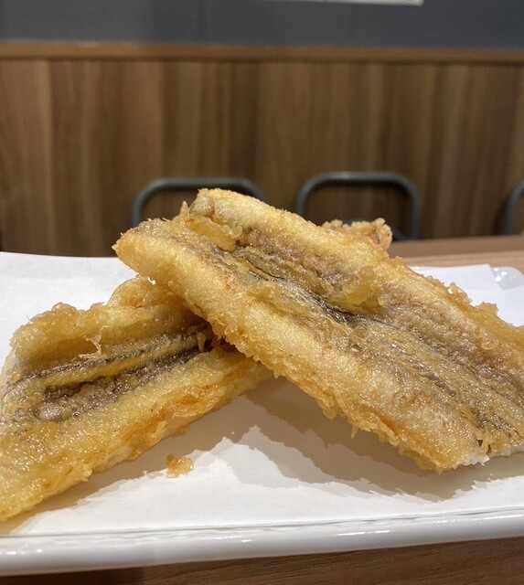
星鳗肉质松软，脂香细腻。可蘸藻盐或天妇罗酱享用！与[红]麝香·贝利A葡萄酒非常搭配！※图片为2份。
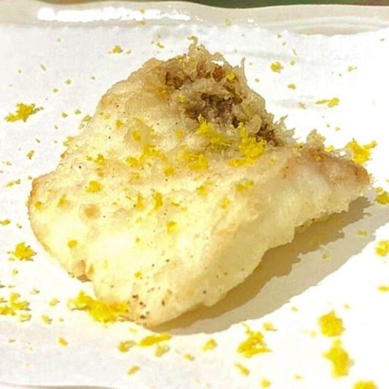
真鲷搭配柠檬皮的清新香气，绝佳组合。请直接品尝！推荐搭配桃红起泡酒！
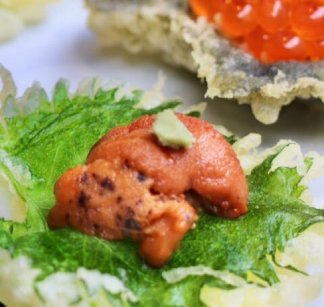
香脆紫苏天妇罗包裹浓郁海胆风味。可蘸少许藻盐，一口尽享奢华！[白]维欧尼葡萄酒搭配更佳！
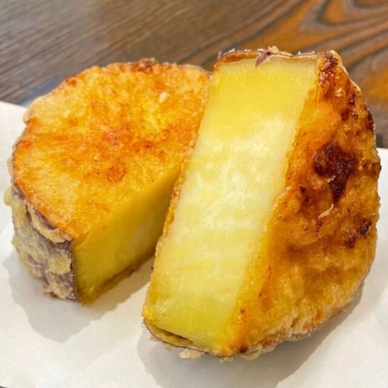
用小火慢炸两小时，充分激发红薯的甜味。[红]赤霞珠葡萄酒搭配更佳！
Sweet potato
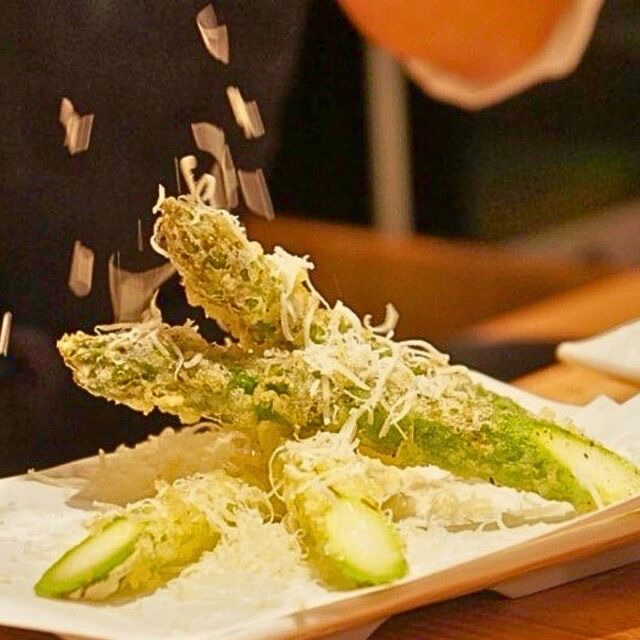
人气之选！芦笋配帕尔玛奶酪，趁热享用最佳！与[白]长相思葡萄酒非常搭配！

新炸茄子与帕尔玛火腿的咸香完美融合。趁热享用！与[红]黑皮诺葡萄酒非常搭配！
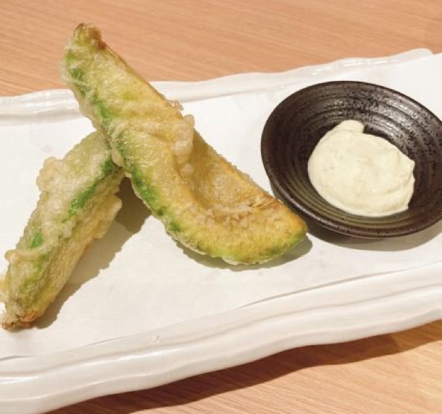
炸至柔滑的牛油果配芥末蛋黄酱，绝配。请与酱汁一起享用！与[白]霞多丽葡萄酒非常搭配！
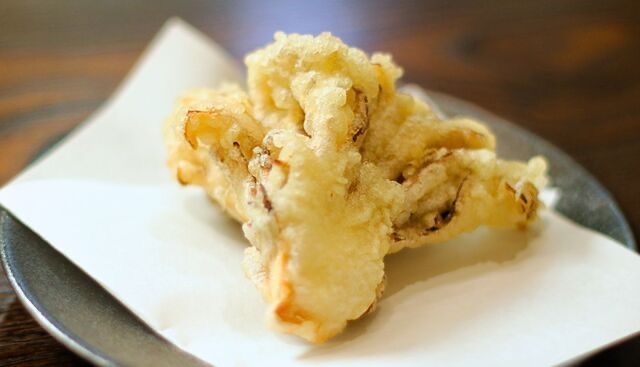
秋季经典。香气浓郁的舞茸炸至酥脆，无论蘸盐还是天妇罗酱都美味可口！与[红]黑皮诺葡萄酒非常搭配！
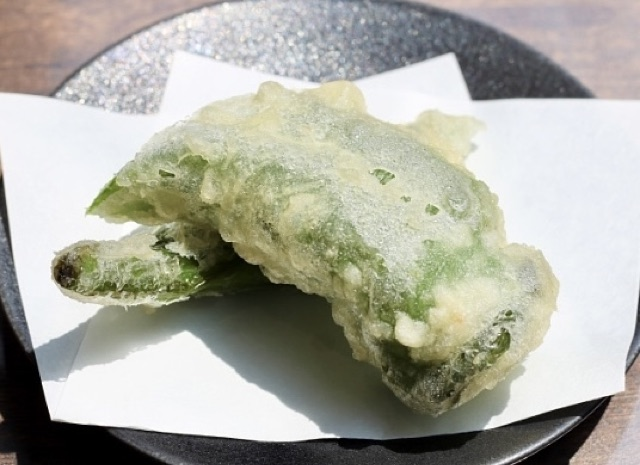
京都蔬菜万愿寺辣椒以温和甜味著称。可蘸少许岩盐享用！[白]甲州葡萄酒搭配更佳！
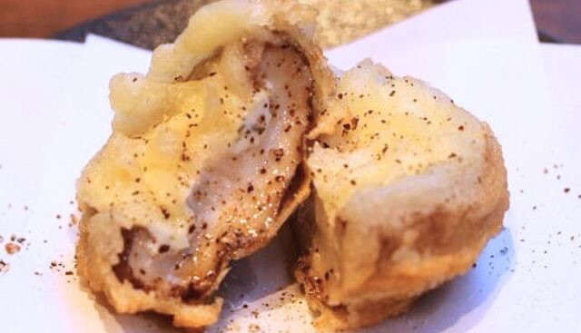
厚实香菇内填入蒜香芝士后炸制。趁热享用！与[红]赤霞珠葡萄酒非常搭配！
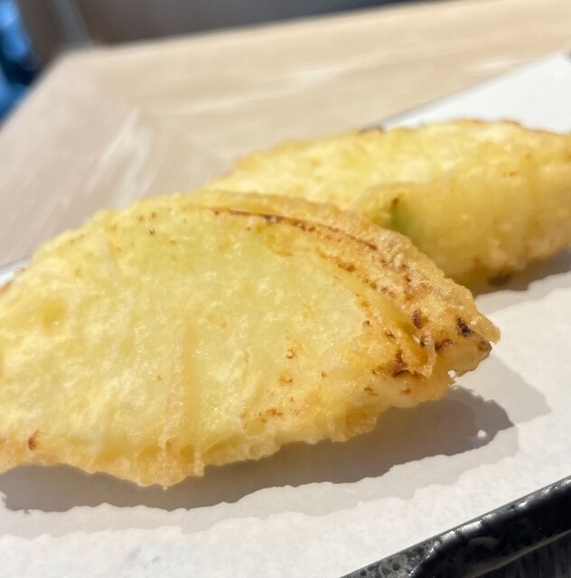
炸制后洋葱的甜味和柔软口感尽显。无论是蘸盐还是天妇罗酱都很美味！与[红]赤霞珠葡萄酒非常搭配！
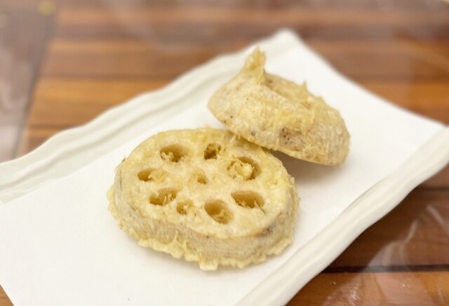
爽脆的口感与香气令人愉悦。可蘸盐或天妇罗酱享用！与[红]赤霞珠葡萄酒非常搭配！
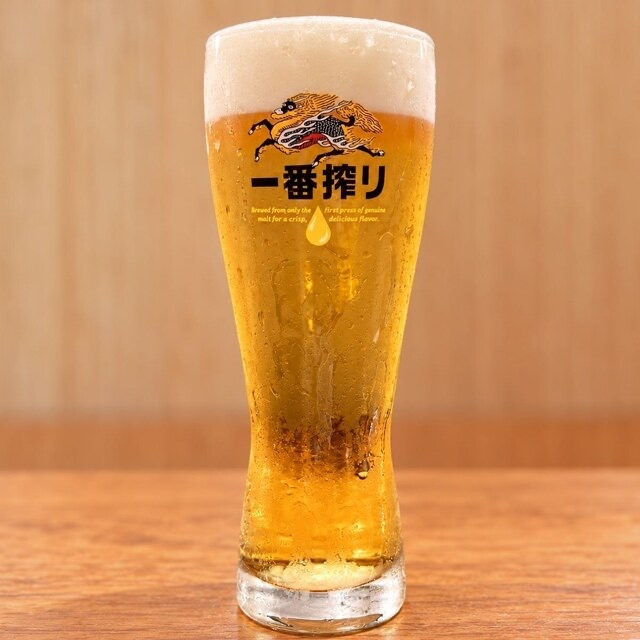
Draft beer (KIRIN) / 기린 생맥주
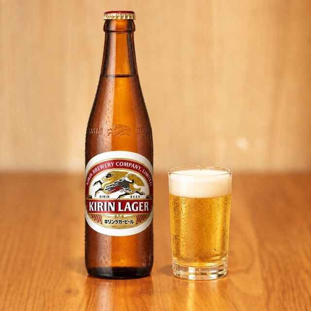
Bottled beer (KIRIN) / 기린 병맥주
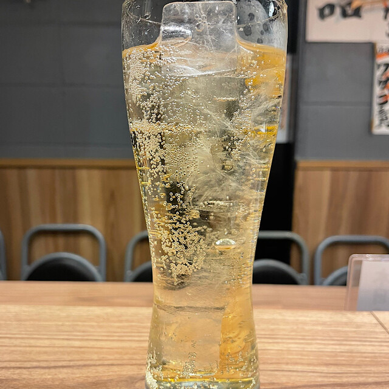
Ginger Highball / 진저 하이볼
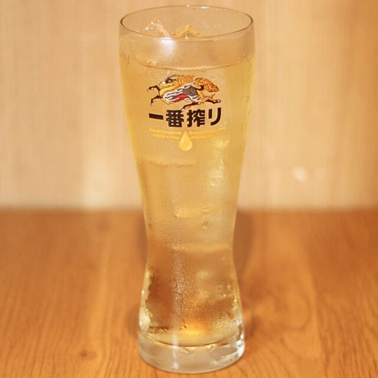
Whisky and Soda (White Horse) / 화이트 호스 하이볼
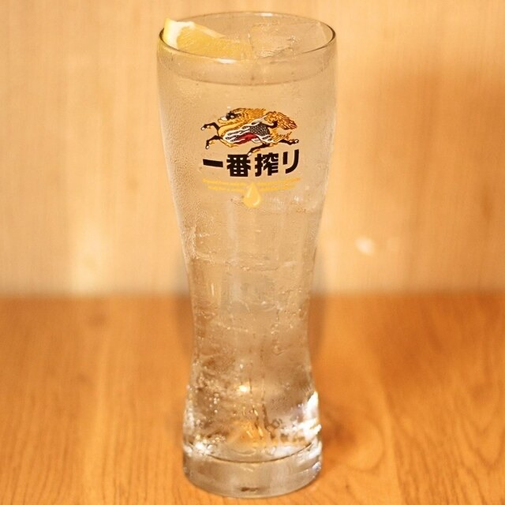
Lemon sour / 레몬 사와

Shochu and Green Tea / 녹차 하이
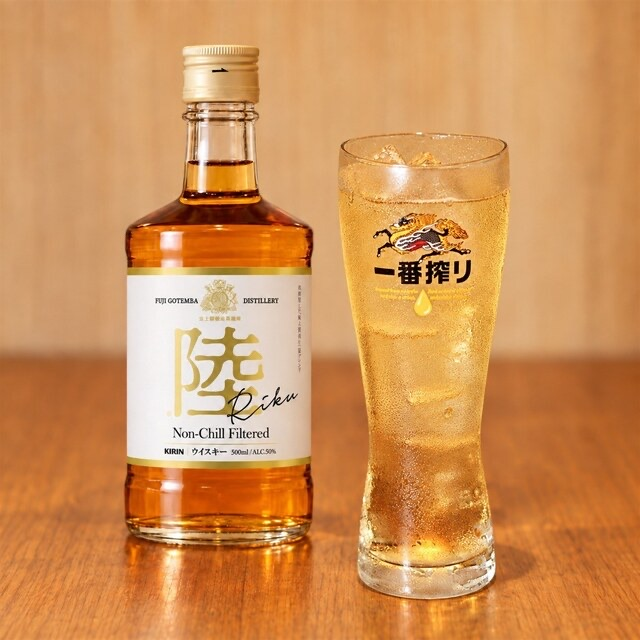
Riku Whisky Highball / 리쿠 위스키 하이볼
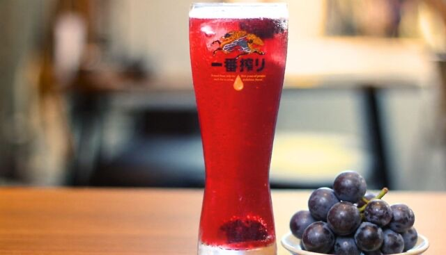
满满的巨峰葡萄果肉，尽享奢华。
秋季限定的果肉葡萄沙瓦！
Kyoho Grape Sour

JJ（茉莉花烧酒＋茉莉花茶）
JJ（Jasmine Shochu and Jasmine Tea）
JR（茉莉花烧酒＋绿茶）
JR（Jasmine Shochu and Green Tea）

Barley Shochu (Nikaido) on the rocks / 니카이도 보리 소주 (온더록스)
Barley Shochu (Nikaido) with water / 니카이도 보리 소주 (물 희석)
Barley Shochu (Nikaido) with soda / 니카이도 보리 소주 (탄산수 희석)

Sweet Potato Shochu (Shiranami) with soda / 시라나미 고구마 소주 (탄산수 희석)
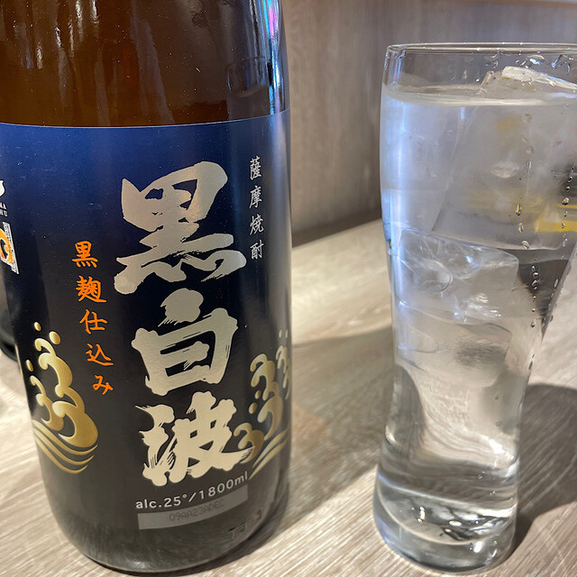
Sweet Potato Shochu (Shiranami) with water / 시라나미 고구마 소주 (물 희석)
Sweet Potato Shochu (Shiranami) with Oolong Tea / 시라나미 고구마 소주 (우롱차 희석)
Sweet Potato Shochu (Shiranami) on the rocks / 시라나미 고구마 소주 (온더록스)
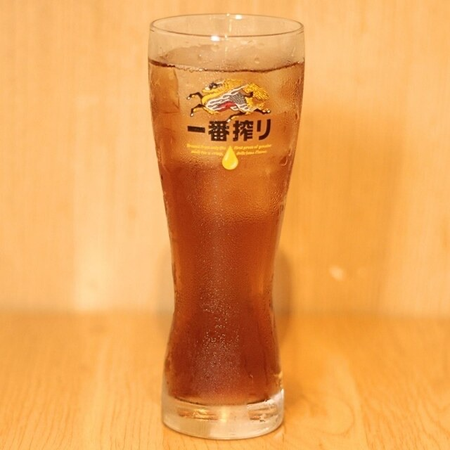
Oolong tea / 우롱차
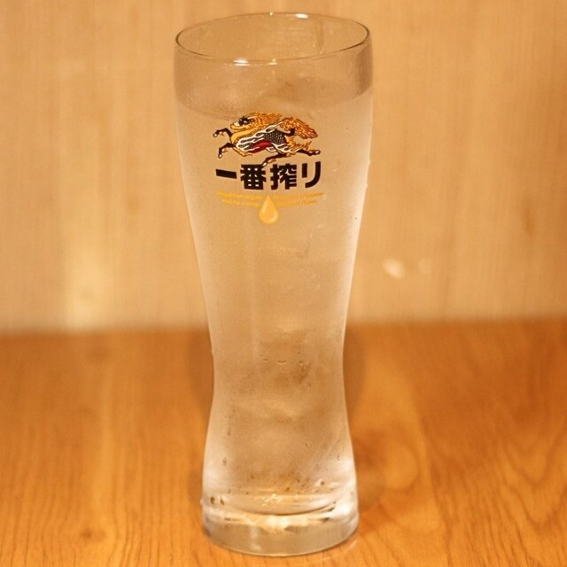
Sparkling water / 탄산수

Grape vinegar soda (Non-alcoholic) / 포도 식초 소다 (무알코올)
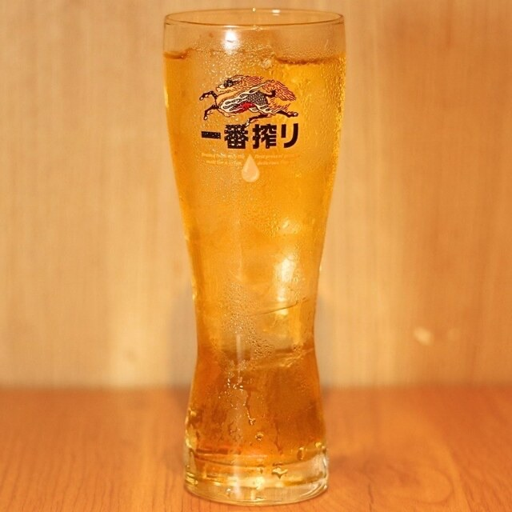
茉莉花茶
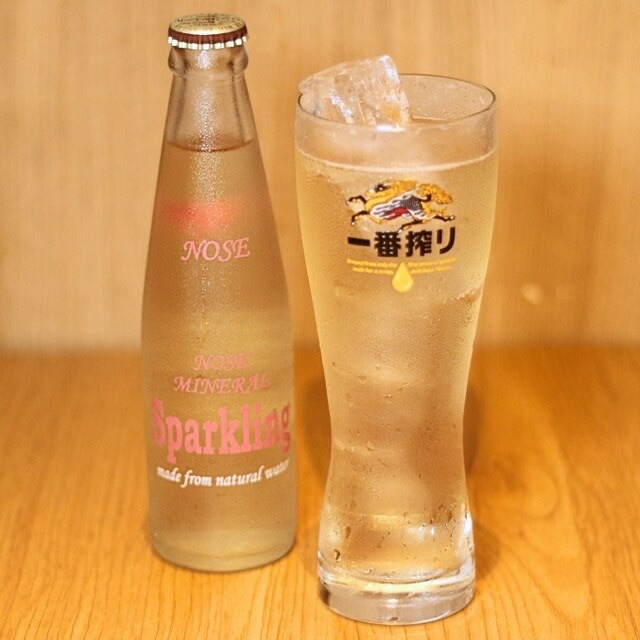
Ginger ale / 진저에일
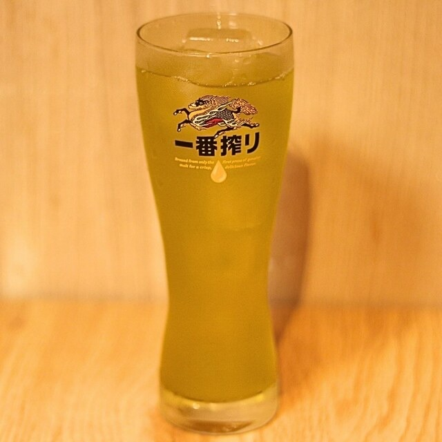
Green tea / 녹차

【无酒精】满满的巨峰葡萄果肉，尽享奢华。
秋季限定的果肉葡萄苏打！
Kyoho Grape Soda（无酒精）
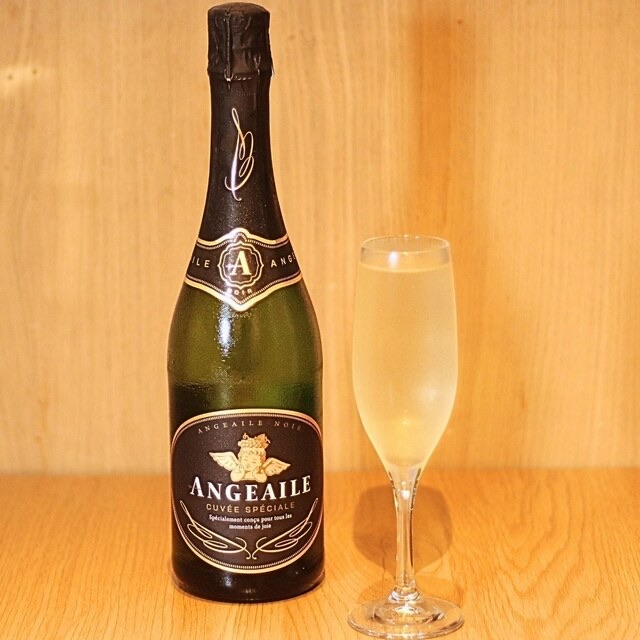
清爽干型，轻盈衬托天妇罗的香气（西班牙）。
◎推荐搭配：鲑鱼籽法式小点、各类天妇罗
起泡酒（CAVA）/ 杯
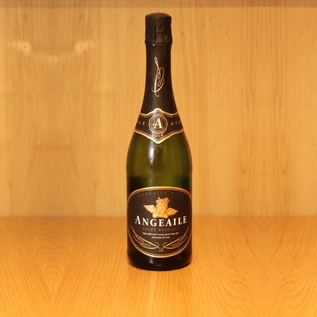
清爽干型，轻盈衬托天妇罗的香气（西班牙）。
◎推荐搭配：鲑鱼籽法式小点、各类天妇罗
起泡酒（CAVA）/ 瓶
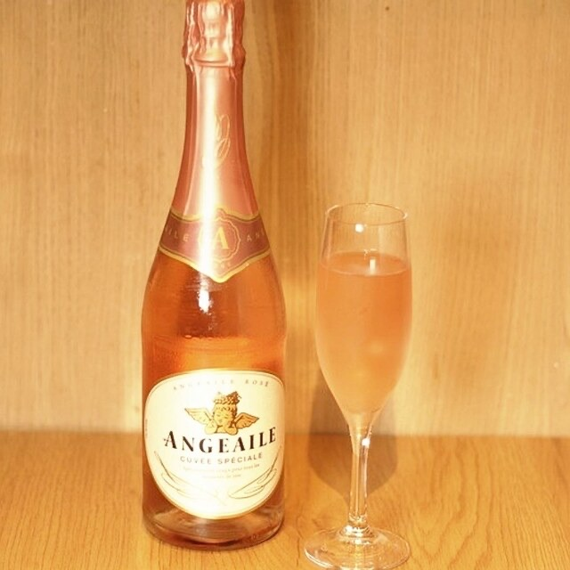
无论是佐盐还是天妇罗蘸汁，都能完美融合，提升虾和真鲷的鲜美（西班牙）。
◎推荐搭配：虾、真鲷～柠檬皮～
玫瑰起泡酒 / 杯
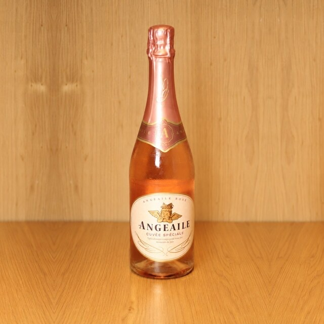
无论是佐盐还是天妇罗蘸汁，都能完美融合，提升虾和真鲷的鲜美（西班牙）。
◎推荐搭配：虾、真鲷～柠檬皮～
玫瑰起泡酒 / 瓶
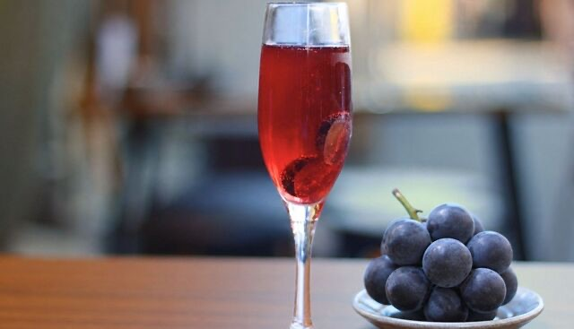
满满的巨峰葡萄果肉，尽享奢华。
玫瑰香气，秋季限定的起泡酒！
Kyoho Grape Rosé Sparkling

满满的巨峰葡萄果肉，尽享奢华。
秋季限定，整颗时令水果入味的桑格利亚。
Kyoho Grape Sangria
这款红葡萄酒（智利）散发着草莓和樱桃的香气，口感轻盈柔和。
◎推荐搭配：鸭肉、炸鸡天妇罗、茄子配帕尔玛火腿
黑皮诺 / 杯 / Pinot Noir（杯）
这款红葡萄酒（法国）拥有丰富的黑加仑香气和深厚的口感，风味醇厚。
◎推荐搭配：红薯、香菇配蒜香芝士
赤霞珠 / 杯 / Cabernet Sauvignon（杯）

这款桃红葡萄酒（日本）融合了野草莓的柔和香气和莓果的果味。
◎推荐搭配：星鳗天妇罗
新年份麝香贝利A桃红 / 杯 / Muscat Bailey A Rosé（新酒）（杯）